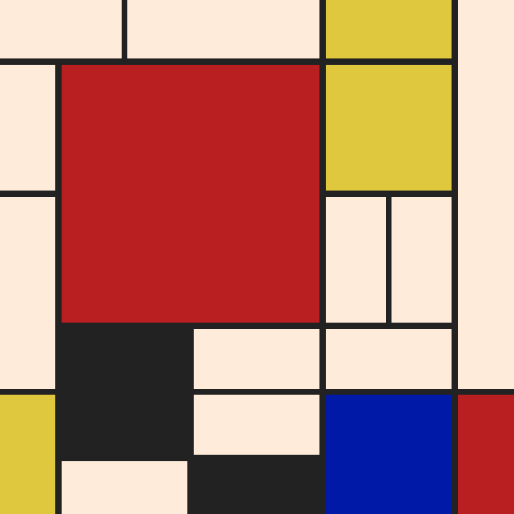
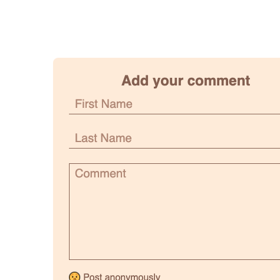
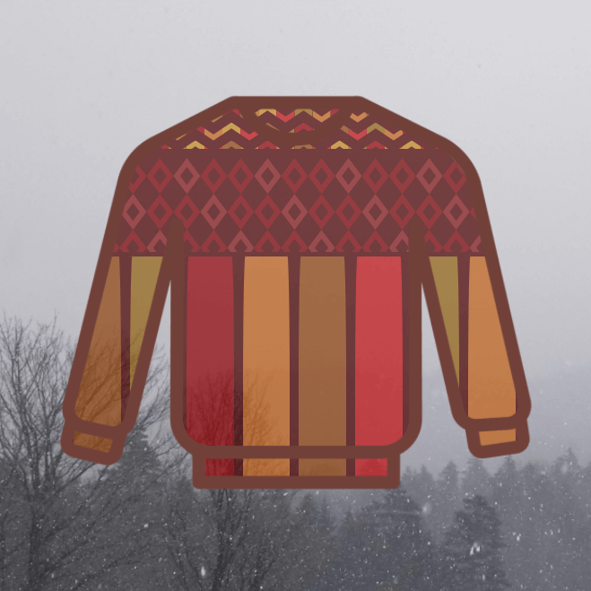

Hey there, I'm Jake.
I am a full stack developer with experience building websites and web applications.
I've spent the past six years working around the United States in a variety of Industries. From wilderness therapy to mountain hospitality I've worn many hats. I've always been drawn to roles that connect humans to themselves and others.
These days my time is spent learning how to build and deploy beautiful websites. I've long been interested in the convergence of creativity and problem solving. I'm learning how to best occupy that space. I design and build websites that look good and solve problems.
When I'm not coding, you can find me making music, out hiking, and petting all the good dogs.
Projects
My recent work is a combination of client collaborations and intentional practice geared towards learning through fun. Hit the github icon to see how each project was built or click through to view the project live.
-

1
Mondrian Grid
How can we write code to replicate iconic works of art? This project utilizes a grid layout with assorted cell sizes to create a responsive replica of an abstract piece by Piet Mondrian.
CSS | Grid
-
2
Learning how to learn
This project is an exercise in how to communicate information more effectively using design layouts. This pixel perfect page was my first exercise in transforming an idea to an interactive website.
CSS | Flex
-

3
Comment Form
Forms are an exercise in functional design. This project was a test to create a custom form with a unified design structure with elements that guide rather than distract the user. Both custom radio buttons and active placeholders add life to the form elements enhancing the user experience.
CSS | Form Design
-

4
Portland to Portland
How can we make sure our page is accessible on any device? A foray into the world of responsive design, this project took a Figma design and implemented media queries to ensure that the page appeared and functioned seamlessly across all device sizes.
CSS | Figma
-

5
Sweater Weather
How can we create ugly sweaters when we’ve never picked up a spool of thread in our life? This project explores the capabilities of CSS by combining clip paths and stacked grid layouts to create an animated sweater that appears differently according to the window size.
CSS | Grid
-
6
Personal Website
The goal of this page is to display both my mission and work clearly and concisely in a way that catches the eye without sacrificing functionality. In the beginning of my development education, this website was an exploration in how to create a modern website using solely CSS.
CSS | More?